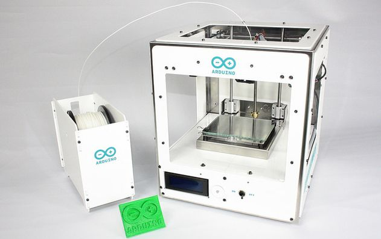
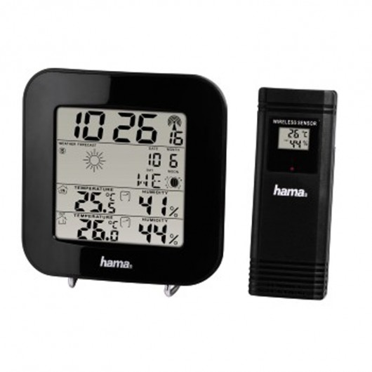
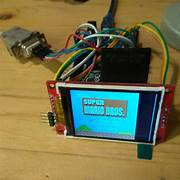
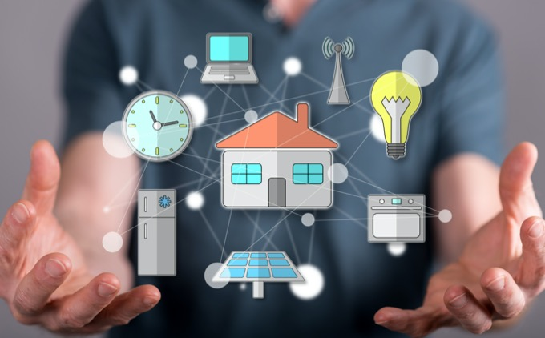
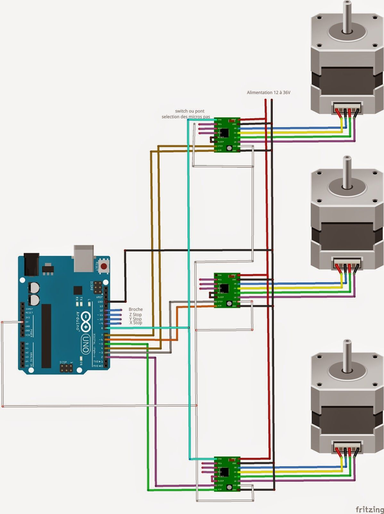
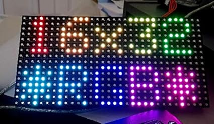
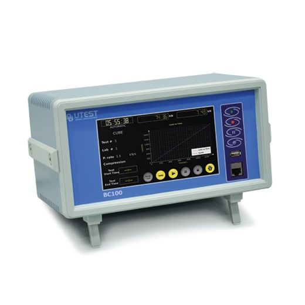
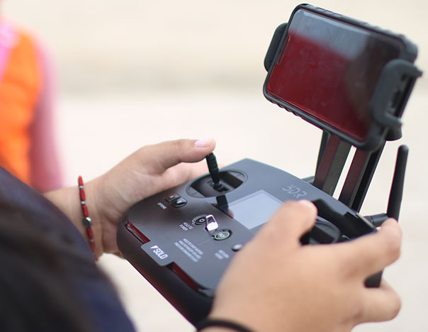

Trabajo Práctico
9 PROYECTOS CREADOS EN ARDUINO
1.Controladores de impresoras 3D: Arduino Mega se utiliza comúnmente en impresoras 3D debido a su gran cantidad de pines y capacidad de procesamiento, lo que permite controlar múltiples motores y sensores.

2.Estaciones meteorológicas: Puedes usar Arduino Mega para crear estaciones meteorológicas que midan la temperatura, la humedad, la presión atmosférica y otros parámetros ambientales.

(es un ejemplo no encontramos otra imagen que contenga arduino)
3.Robótica: Arduino Mega es una opción popular para la construcción de robots, ya que ofrece suficientes pines de E/S para controlar motores, sensores y actuadores.

4.Sistemas de automatización del hogar: Puedes usar Arduino Mega en proyectos de automatización del hogar para controlar luces, persianas, sistemas de riego y otros dispositivos.

5.Controladores de CNC: Arduino Mega se utiliza en controladores de máquinas de control numérico por computadora (CNC) para controlar motores paso a paso y dirigir el movimiento de herramientas.

6.Proyectos de iluminación LED: Puedes crear espectáculos de iluminación LED y pantallas con Arduino Mega, controlando una gran cantidad de LED de forma independiente.

7.Estaciones de monitoreo y adquisición de datos: Arduino Mega se usa para construir estaciones de monitoreo y adquisición de datos que recopilan información de sensores,y la envían a una computadora o una plataforma en la nube.

(es un ejemplo no encontramos una imagen que contenga arduino)
8.Sistemas de control de vehículos no tripulados (drones): En proyectos de drones caseros, Arduino Mega puede usarse para controlar la navegación y estabilización de aeronaves no tripuladas.

(los drones se pueden controlar con arduino por eso la imagen)
9.Simuladores y juegos: Arduino Mega se ha utilizado en proyectos de simuladores y controladores de juegos personalizados, como volantes y paneles de control.
VOLVER AL INICIO
pagina principal
OTRAS PAGINAS
utilidades
historia
ide,instalacion y uso